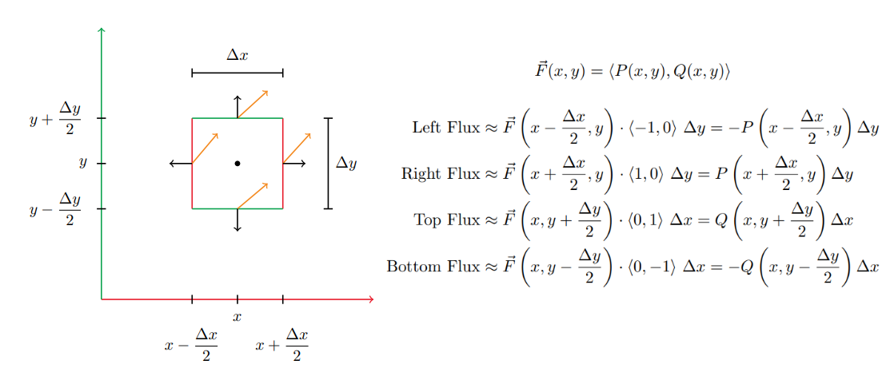

Table of Contents
Multivariable Calculus

NARROW DISPLAY WARNING
You are most likely using a tablet or mobile device in portrait orientation. This website is best viewed using a typical computer screen with the browser window maximized.
Viewing this website in portrait orientation can cause problems with equations being longer than the screen width (you can scroll to the right), images being poorly sized, and the font size of maths text being much smaller than regular text. If your only option is a tablet or mobile device, your viewing experience will be better if you view this website in landscape orientation. You might need to refresh the page to fix any problems after rotating.
An intuitive description of the divergence in vector calculus is a vector operator that quantifies how much flow is coming out of a point in the vector field. If there is a net flow of arrows coming out of a point, then the divergence at that point is positive. If there is a net flow going into a point, then the divergence is negative at that point. If the divergence at a point is zero, then there is net zero flow into or out of the point.
For a vector field $\vec{F}(x,y)$,
\begin{equation} \vec{F}(x,y) = \langle P(x,y),Q(x,y) \rangle \end{equation}The divergence $\text{div}(\vec{F})$ is,
\begin{equation} \text{div}(\vec{F}) = \nabla \cdot \vec{F} = \frac{\partial P}{\partial x} + \frac{\partial Q}{\partial y} \end{equation}For a vector field $\vec{F}(x,y,z)$,
\begin{equation} \vec{F}(x,y,z) = \langle P(x,y,z),Q(x,y,z),R(x,y,z) \rangle \end{equation}The divergence $\text{div}(\vec{F})$ is,
\begin{equation} \text{div}(\vec{F}) = \nabla \cdot \vec{F} = \frac{\partial P}{\partial x} + \frac{\partial Q}{\partial y} + \frac{\partial R}{\partial z} \end{equation}The divergence at a point in a vector field $\vec{F}(x,y)$ is sort of the net amount of vector field arrows flowing out of that point, with arrows flowing out a positive contribution and arrows flowing in a negative contribution. It's not clear what that means, but the limit approximation actually makes a lot more sense.
If you want to find the divergence at a point $(x,y)$ in a vector field, it's approximately the flux of arrows flowing out of a small box around the point $(x,y)$. Here the box has width $\Delta x$ and height $\Delta y$. Since this is an approximation, we'll just use the vector field evaluated at the midpoint of each side. To calculate how much flux is flowing out of a side, take the dot product of the midpoint vector field arrow and unit normal vector $\vec{n}$ on that side times the length of that side.
The total flux is the sum of all the side fluxes.
\begin{align} \text{Total Flux } &= \left[P\left(x+\frac{\Delta x}{2},y\right) - P\left(x-\frac{\Delta x}{2},y\right)\right] \Delta y \\ &+ \left[Q\left(x,y+\frac{\Delta y}{2}\right) - Q\left(x,y-\frac{\Delta y}{2}\right)\right]\Delta x \end{align}There's still one piece missing though. In the limit as the box shrinks around the point $(x,y)$, the $\text{Total Flux}$ goes to zero because the side length go to zero.
\begin{equation} \lim_{\Delta x, \Delta y \rightarrow 0} \text{Total Flux } = 0 \end{equation}So instead, the $\text{Total Flux}$ will be averaged over the area of the box, which is $\Delta x \Delta y$.
\begin{align} \nabla \cdot \vec{F}(x,y) &= \lim_{\Delta x, \Delta y \rightarrow 0} \frac{\text{Total Flux}}{\Delta x \Delta y} \\ &= \lim_{\Delta x \rightarrow 0} \frac{P\left(x+\frac{\Delta x}{2},y\right) - P\left(x-\frac{\Delta x}{2},y\right)}{\Delta x} \\ &+ \lim_{\Delta y \rightarrow 0} \frac{Q\left(x,y+\frac{\Delta y}{2}\right) - Q\left(x,y-\frac{\Delta y}{2}\right)}{\Delta y} \end{align}This isn't usually the way they are written, but these are the partial derivatives of $P$ and $Q$ with respect to $x$ and $y$.
\begin{align} \frac{\partial P}{\partial x} &= \lim_{\Delta x \rightarrow 0} \frac{P\left(x+\frac{\Delta x}{2},y\right) - P\left(x-\frac{\Delta x}{2},y\right)}{\Delta x} \\ \frac{\partial Q}{\partial y} &= \lim_{\Delta y \rightarrow 0} \frac{Q\left(x,y+\frac{\Delta y}{2}\right) - Q\left(x,y-\frac{\Delta y}{2}\right)}{\Delta y} \end{align}It's usually written as $P(x + \Delta x,y) - P(x,y)$ and $Q(x,y + \Delta y) - Q(x,y)$, but they still have a difference of $\Delta x$ and $\Delta y$ in their input arguments.
So then the flux going out of the box averaged over the area of the box in the limit as the box shrinks to a point is,
\begin{equation} \nabla \cdot \vec{F}(x,y) = \lim_{\Delta x, \Delta y \rightarrow 0} \frac{\text{Total Flux}}{\Delta x \Delta y} = \frac{\partial P}{\partial x} + \frac{\partial Q}{\partial y} \end{equation}The idea for divergence of a vector field in 3D is similar to 2D. There's now a cube centered around a point $(x,y,z)$ with width $\Delta x$, length $\Delta y$, and height $\Delta z$.
There are six sides of the cube to calculate the flux for. To calculate how much flux is flowing out of a side, take the dot product of the midpoint vector field arrow and unit normal vector $\vec{n}$ on that side times the area of that side.
\begin{equation} \vec{F}(x,y,z) = \langle P(x,y,z),Q(x,y,z),R(x,y,z)\rangle \end{equation} \begin{align} \text{Left Flux} &\approx \vec{F}\left(x-\frac{\Delta x}{2},y,z\right) \cdot \langle -1,0,0 \rangle ~\Delta y \Delta z = -P\left(x-\frac{\Delta x}{2},y,z\right) \Delta y \Delta z \\ \text{Right Flux} &\approx \vec{F}\left(x+\frac{\Delta x}{2},y,z\right) \cdot \langle 1,0,0 \rangle ~\Delta y \Delta z = P\left(x+\frac{\Delta x}{2},y,z\right) \Delta y \Delta z \\ \text{Front Flux} &\approx \vec{F}\left(x,y+\frac{\Delta y}{2},z\right) \cdot \langle 0,1,0 \rangle ~\Delta x \Delta z = Q\left(x,y+\frac{\Delta y}{2},z\right) \Delta x \Delta z \\ \text{Back Flux} &\approx \vec{F}\left(x,y-\frac{\Delta y}{2},z\right) \cdot \langle 0,-1,0 \rangle ~\Delta x \Delta z = -Q\left(x,y-\frac{\Delta y}{2},z\right) \Delta x \Delta z \\ \text{Top Flux} &\approx \vec{F}\left(x,y,z+\frac{\Delta z}{2}\right) \cdot \langle 0,0,1 \rangle ~\Delta x \Delta y = R\left(x,y,z+\frac{\Delta z}{2}\right) \Delta x \Delta y \\ \text{Bottom Flux} &\approx \vec{F}\left(x,y,z-\frac{\Delta z}{2}\right) \cdot \langle 0,0,-1 \rangle ~\Delta x \Delta y = -R\left(x,y,z-\frac{\Delta z}{2}\right) \Delta x \Delta y \end{align}The divergence at $(x,y,z)$ is the limit of the sum of all the fluxes divided by the volume of the cube as the cube shrinks to the point.
\begin{align} \frac{\text{Total Flux}}{\text{Volume}} &= \frac{\text{Right Flux } + \text{Left Flux}}{\Delta x \Delta y \Delta z} \\ &+ \frac{\text{Back Flux } + \text{Front Flux}}{\Delta x \Delta y \Delta z} \\ &+ \frac{\text{Top Flux } + \text{Bottom Flux}}{\Delta x \Delta y \Delta z} \\ \end{align} \begin{align} \nabla \cdot \vec{F} &= \lim_{\Delta x, \Delta y, \Delta z \rightarrow 0} \frac{\text{Total Flux}}{\text{Volume}} \\ &= \lim_{\Delta x \rightarrow 0} \frac{P\left(x+\frac{\Delta x}{2},y,z\right) - P\left(x-\frac{\Delta x}{2},y,z\right)}{\Delta x} \\ &+ \lim_{\Delta y \rightarrow 0} \frac{Q\left(x,y+\frac{\Delta y}{2},z\right) - Q\left(x,y-\frac{\Delta y}{2},z\right)}{\Delta y} \\ &+ \lim_{\Delta z \rightarrow 0} \frac{R\left(x,y,z+\frac{\Delta z}{2}\right) - R\left(x,y,z-\frac{\Delta z}{2}\right)}{\Delta z} \end{align}The limits are the partial derivatives of $P$, $Q$, and $R$ with respect to $x$, $y$, and $z$. That means the divergence is,
\begin{equation} \nabla \cdot \vec{F} = \frac{\partial P}{\partial x} + \frac{\partial Q}{\partial y} + \frac{\partial R}{\partial z} \end{equation}